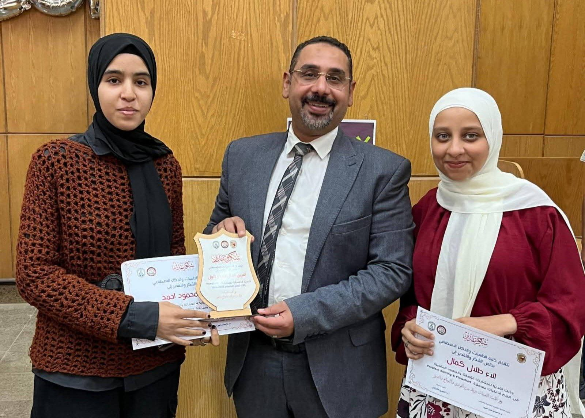
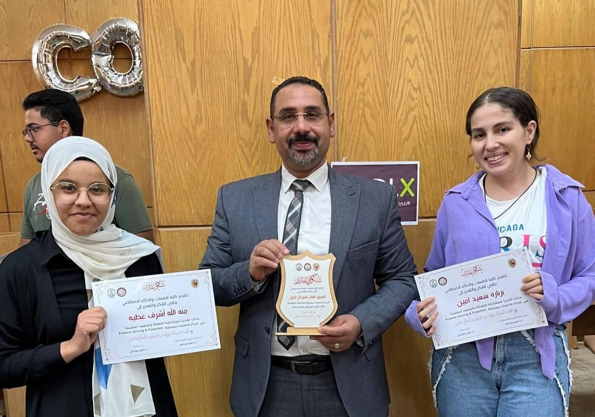
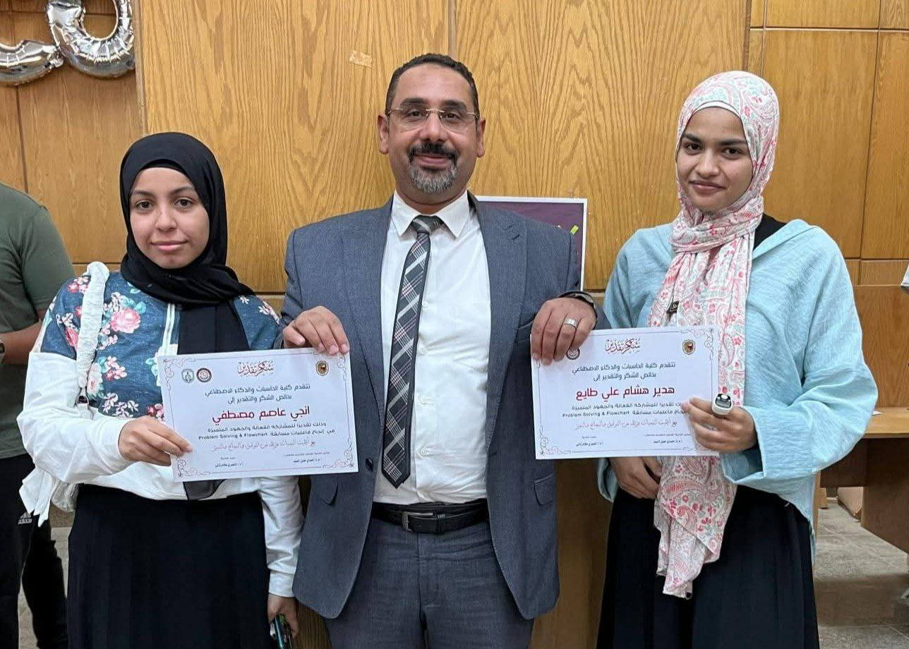

🎉 ختام فعاليات مسابقة Problem Solving & Flowchart 🎉

بفخر كبير، اختتم Team Codi.X فعاليات واحدة من أفضل المسابقات العملية داخل كلية الحاسبات، وذلك بالتعاون مع طلاب من أجل مصر وبرعاية إدارة رعاية الشباب بالكلية.
الفعالية كانت مليانة شغف، تحدي، وأفكار مبتكرة… وشوفنا فيها قد إيه الطلاب قادرين يبدعوا ويحلّوا المشكلات بطريقة منظمة وذكية، سواء في الـ Problem Solving أو تصميم الـ Flowcharts.
وهدفنا الدائم كان إن المسابقة تكون تجربة حقيقية تساعد الطلاب ينمّوا مهاراتهم ويستمتعوا بروح التنافس الإيجابي. 💡🔥
🏆 الفائزين في مسابقة Flowchart
المركز الأول:
الاء طلال
ايمان محمود
المركز الثاني:
نادية سيد
منه الله محمد


🏆 الفائزين في مسابقة Problem Solving
المركز الأول:
منه الله أشرف
برباره سعيد


مبروك لكل الفائزين… استحقّيتوا التكريم عن جدارة! 🌟
🙏 شكر وتقدير
يتقدم Team Codi.X بخالص الشكر لـ:
أ.د النميري علام – عميد كلية الحاسبات
د/ حمدي حسن – وكيل الكلية لشئون التعليم والطلاب
على دعمهم المستمر لكل نشاط طلابي يشجع الابتكار ويقوي مهارات الطلاب.

🔹 Team Codi.X… دايمًا معاكم، ودايمًا بنقدّم فعاليات تليق بطلاب الكلية وتفتح لهم فرص جديدة للتعلم والتميز.